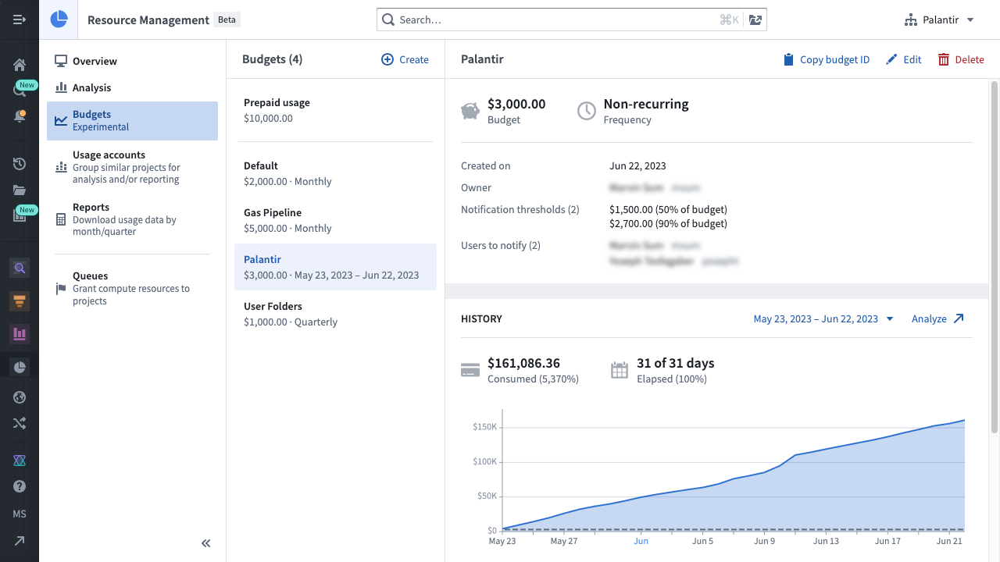
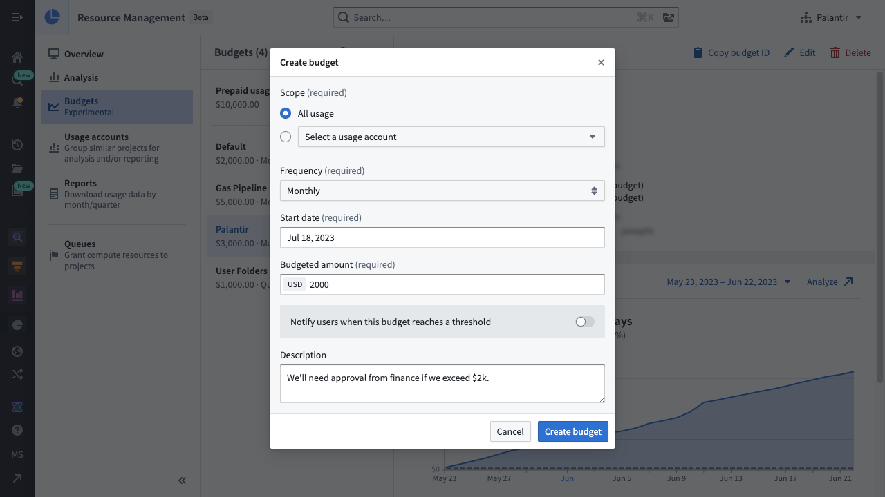
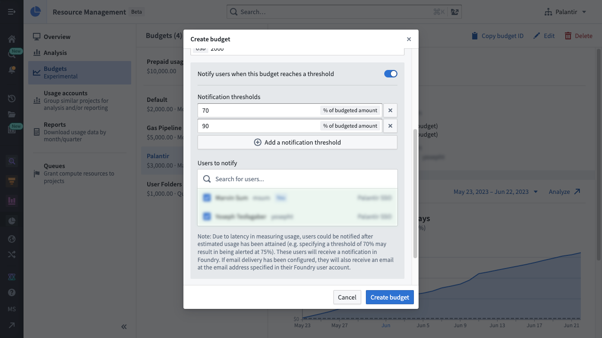

:::callout{theme="neutral"} The Resource Management budget functionality is only available for customers who have an active usage-based contract with Palantir. :::
Resource Management's budget functionality allows users to track usage spend over some period of time. Budgets can also be configured to notify users when usage exceeds some pre-determined amount.
Whenever the budget exceeds a notification threshold, a notification is sent to the list of users.
:::callout{theme="warning"} Budget notifications are sent after the budget has exceeded the threshold. Due to the process of measuring and calculating usage, there may be latency between the time that the budget passes the threshold and the time of notification (for example, specifying a notification threshold of 70% may result in a notification sent at 75%). In some rare cases, this latency could be up to 26 hours. :::
Budgets currently support two different scopes:
To use budgets, one or more of the following roles are required:
Enrollment administrator: View, create, edit, and delete budgets.Resource management administrator: View, create, edit, and delete budgets.Roles are granted through the Enrollment permissions page in Control Panel.
In Resource Management, select Budgets in the left sidebar. This will display a list of budgets available in your enrollment. Select a single budget to view its details, history, and notifications.

To create a budget, select the Create button above the list of budgets. You will then be able to specify the budget's scope, frequency, start date (and end date, for non-recurring budgets), budgeted amount, and description.

To notify users whenever a notification threshold is reached, select the notification toggle to reveal the notification options. Specify the notification thresholds and the list of users who should be notified. Then select Create budget to complete the process.

:::callout{theme="danger"} Deleting a budget also deletes its existing notifications and prevents future notifications from being sent to the users. This action cannot be undone. :::
While viewing a single budget, select the Delete button. When the warning dialog appears, select Delete budget.